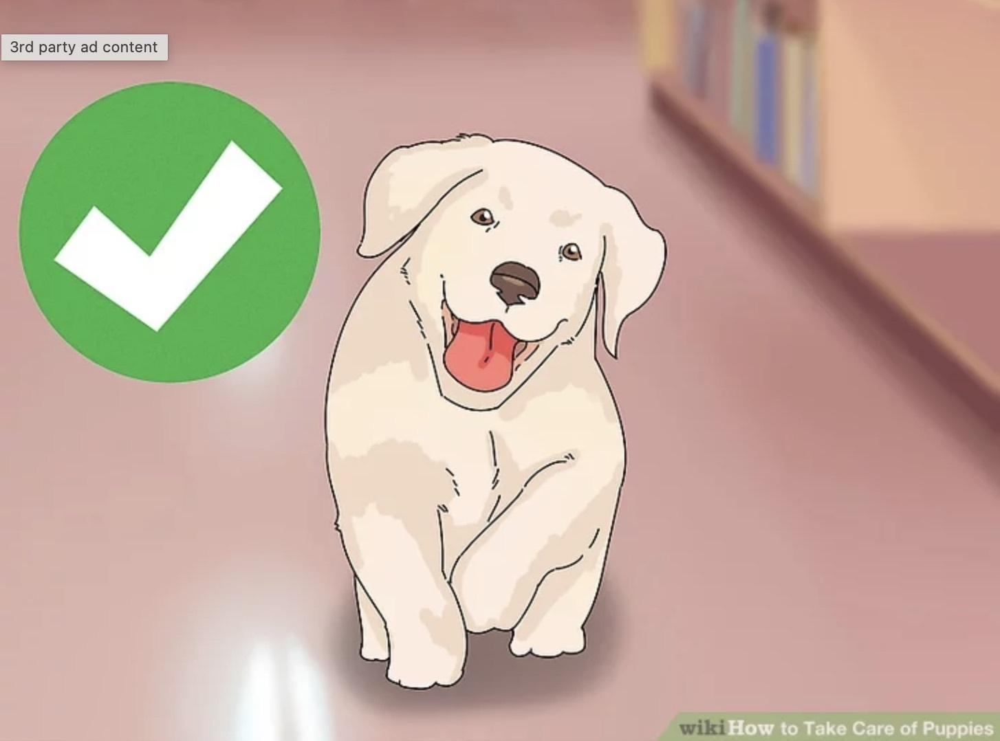

====this is a teaching website====
Enzo Felippe De Oliveira Gomes
Home
Page1
Page2
Page3
Page4
If You Don't know how to take care of a pet don't worry.
There are websites that can help!
From dogs to lizards there is a wiki for you.
Read these simple lists that can teach you more.
